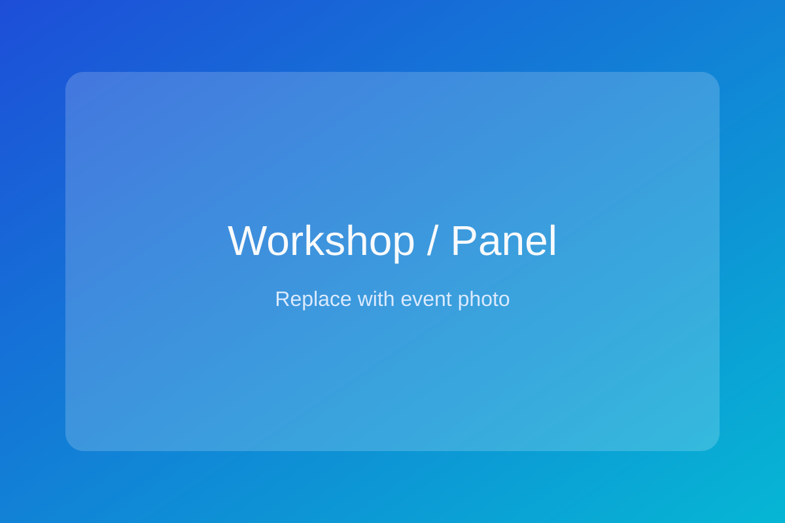

Bachelor's Degree
GIKI, Pakistan
Built technical foundations and academic discipline in engineering and applied research.
PhD in progress · Texas A&M University
I am Muhammad Hasnain, a researcher committed to producing rigorous, practical, and socially meaningful academic work. My journey has been powered by scholarships, resilience, and a deep belief that education can transform families and communities.
I grew up in an underprivileged village in northern Pakistan, where stable internet and electricity were not guaranteed. I became the first person from my village to pursue higher education abroad. Since my undergraduate years, I have supported a family of 10 members, including my parents, siblings, spouse, and child.
Every stage of my education, from high school to my PhD path, has been fully funded through scholarships and merit-based support. This journey is not only a personal achievement; it reflects what can happen when opportunity meets persistence. I strive to honor that opportunity through high-quality research and mentorship.
Bachelor's Degree
Built technical foundations and academic discipline in engineering and applied research.
Global UGRAD Semester Exchange
Expanded international academic exposure and cross-cultural collaboration experience.
Master's Degree
Strengthened research methodology, publication strategy, and conference participation.
PhD (In Progress)
Advancing research at the frontier of modern AI and data-driven systems.
My work focuses on rigorous, high-impact research with a commitment to reproducibility, collaboration, and practical relevance.
Full publication records are maintained on Google Scholar and OpenReview. Please use these profiles for the most up-to-date citation and manuscript information.
ORCID ensures persistent and verifiable research attribution across venues and collaborations.
I regularly present and engage with international research communities through conferences, workshops, and scholarly events.

Education from high school through PhD journey funded through scholarships and merit-based support, with an estimated total value of over USD 350,000.
Recipient of multiple scholarships, awards, and competitive opportunities across institutions in Pakistan and the United States.
Active participation in national and international academic conferences, contributing to peer-reviewed scholarly discussions.
I welcome collaboration opportunities, research discussions, and speaking invitations.